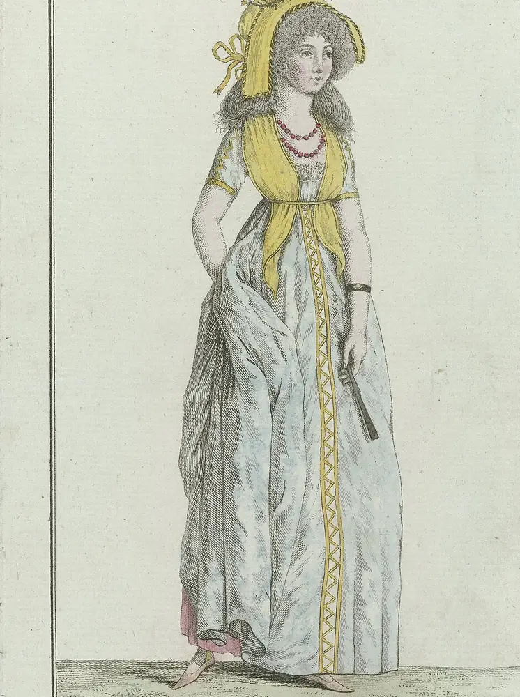
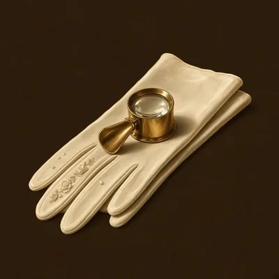
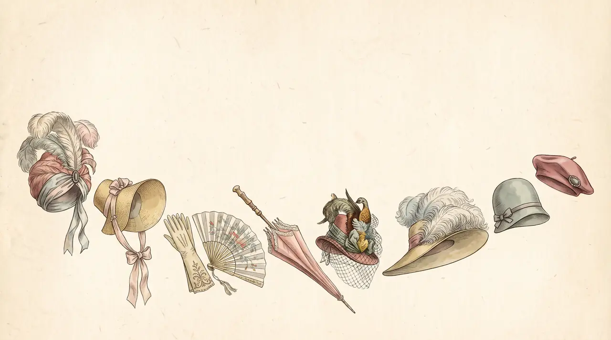
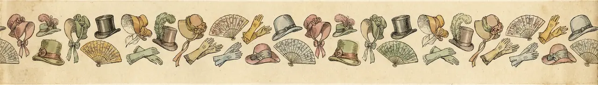
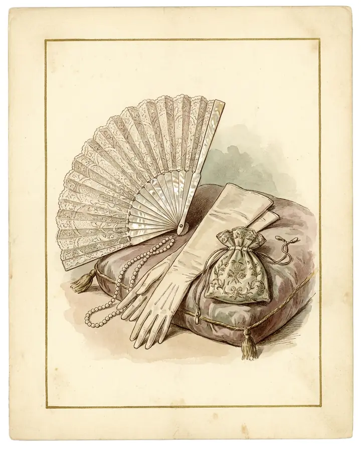

out of 500


Five old fashion plates, one from each era between the 1790s and the 1930s. Guess the year each one came out.

out of 500



Every image here is out of copyright. 119 are released as CC0 by the Rijksmuseum, and 49 are public domain because of their age. Each one has a single printed or catalogued year on its Wikimedia Commons page, and that year is the answer. We cropped out printed dates so the picture does not give it away.
Each game takes one image from each of five eras, so every set runs from the 1790s to the 1930s in a mixed order.
A score is 100 for the exact year, minus 3 for every year you are off. Your guesses stay in this page. There are no accounts, cookies or trackers. The challenge link holds the round number and your score, nothing else.


_Mode_de_Longchamp_(..),_RP-P-2009-2544.jpg){kind=link}

,_RP-P-OB-103.226.jpg){kind=link}


.jpg){kind=link}


,_RP-P-OB-103.518.jpg){kind=link}


)_Chapeau-Casqu_(..),_RP-P-2009-2254.jpg){kind=link}
_Cornette_en_forme_de_Casqu_(..)_Vrouw_gekleed_in_een_japon_met_Etruskisch_borduurwerk,_op_het_hoofd_een_%27Cornette%27_met_linten,_RP-P-2009-2265.jpg){kind=link}
_Chapeau_-_Capot_(..),_RP-P-2009-1386.jpg){kind=link}
_Cocarde_en_feuilles_(..),_RP-P-2009-1319.jpg){kind=link}
_Turban_%C3%A0_la_Gulnar_(..),_RP-P-2009-1327.jpg){kind=link}
_Bonnet_N%C3%A9glig%C3%A9_(..),_RP-P-2009-2287.jpg){kind=link}
_Cornette_en_Gaz_(..),_RP-P-2009-1338.jpg){kind=link}
_Cheveux_courts_(..),_RP-P-2009-1428.jpg){kind=link}
(bis)_Turban_%C3%A0_Calott_(..),_RP-P-2009-2251.jpg){kind=link}
.jpg){kind=link}


_Chapeau_demi-Bateau_(..),_RP-P-2009-2416.jpg){kind=link}
_R%C3%A9dingote_de_L%C3%A9vantin_(..),_RP-P-OB-103.464.jpg){kind=link}
_Chapeaux_de_Velours_(..),_RP-P-OB-103.465.jpg){kind=link}
,_RP-P-2009-2436.jpg){kind=link}

_Chapeau_de_Virgini_(..),_RP-P-2009-2443.jpg){kind=link}
,_RP-P-2009-1454.jpg){kind=link}
_Chapeau_de_velours_(..),_RP-P-2009-2456.jpg){kind=link}
_Coeffure_en_nattes_(..),_RP-P-2009-2409.jpg){kind=link}
_Robe_de_Gros_de_Naples_(..),_RP-P-2009-2421.jpg){kind=link}

,_BI-1938-0115A-6.jpg){kind=link}
,_BI-1938-0115A-11.jpg){kind=link}
,_BI-1938-0115A-28.jpg){kind=link}
,_BI-1938-0115A-36.jpg){kind=link}


,_BI-1938-0115A-4.jpg){kind=link}
,_BI-1938-0115A-12.jpg){kind=link}
,_BI-1938-0115A-27.jpg){kind=link}
,_RP-P-2009-3017.jpg){kind=link}
,_RP-P-OB-103.233.jpg){kind=link}
,_RP-P-2009-3170.jpg){kind=link}


,_RP-P-2009-3080.jpg){kind=link}

,_RP-P-2009-3305.jpg){kind=link}


.jpg){kind=link}


,_RP-P-OB-103.097.jpg){kind=link}


,_RP-P-OB-103.562.jpg){kind=link}
,_RP-P-OB-103.105.jpg){kind=link}
,_RP-P-OB-103.563.jpg){kind=link}
,_RP-P-OB-103.114.jpg){kind=link}


,_RP-P-2009-1948-9.jpg){kind=link}
,_RP-P-2009-1952-1.jpg){kind=link}
,_RP-P-2009-1814.jpg){kind=link}
,_RP-P-2009-1811.jpg){kind=link}


,_RP-P-2009-1948-7.jpg){kind=link}
,_RP-P-2009-1961-16.jpg){kind=link}


,_RP-P-2009-1942-10.jpg){kind=link}
,_RP-P-2009-1952-3.jpg){kind=link}


,_RP-P-2009-3002.jpg){kind=link}
,_RP-P-2009-3216.jpg){kind=link}


,_RP-P-2009-1602.jpg){kind=link}
,_RP-P-2009-3213.jpg){kind=link}
,_RP-P-2009-3220.jpg){kind=link}
,_RP-P-2009-3229.jpg){kind=link}


,_RP-P-2009-1548.jpg){kind=link}